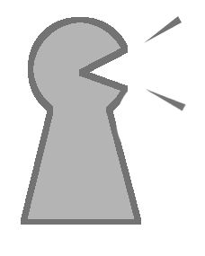

声データ録音
「Start」ボタンを押すと、対応するピアノの音が1秒間流れ、その後、1秒間音声が録音されます。
ピアノと同じ音程で、あなたの声をマイクに入力してください。
「ドレミファソラシド」の8音の入力が終わると終了です。
録音開始：

録音が完了しました。
研究のため、音声データを収集しています。あなたの音声をデータとして保存してもよろしいですか？
保存したデータは、"良い声"の分析のために利用します。
名前は入力しなくてもかまいません。入力していただけた場合、分析した結果をお知らせできるかもしれません。
ご協力いただける場合は下の送信ボタンを押してください。
名前：
録音結果を使った曲を聞いてみる。